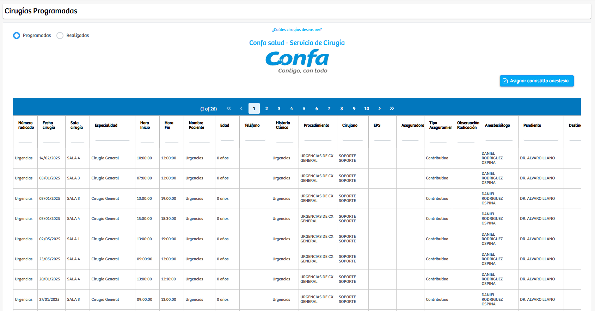
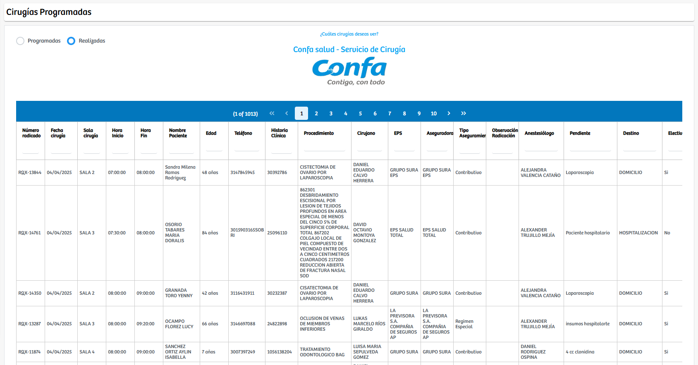

Modulos Sas-Web
Funcionalidades
Cirugias Programadas
El módulo Cirugias Programadas permite visualizar y gestionar el listado de procedimientos quirúrgicos programados dentro del sistema. Al ingresar, se presenta una tabla con información detallada de cada cirugía, incluyendo número de radicado, fecha del procedimiento, sala asignada, especialidad, horarios de inicio y fin, datos del paciente, tipo de aseguramiento, procedimiento, cirujano, anestesiólogo y observaciones relevantes. Mediante un selector ubicado en la parte superior, el usuario puede alternar entre dos vistas principales: Programadas y Realizadas.
- Programadas: muestra las cirugías pendientes por ejecutar. 
- Realizadas: permite visualizar el historial de cirugías ya efectuadas. 
En la parte superior derecha de la vista "Programadas" se encuentra el botón “Asignar canastilla anestesia”, que permite completar la preparación del material requerido para cada procedimiento quirúrgico. Al seleccionarlo, el sistema dirige al usuario a un formulario donde podrá registrar la sala y la fecha de la cirugía, y posteriormente visualizar la canastilla predeterminada asociada al procedimiento.

Desde esta vista es posible:
- Consultar los medicamentos e insumos incluidos en la canastilla.
- Ajustar cantidades según las necesidades de la cirugía.
- Agregar insumos adicionales.
- Eliminar elementos no requeridos.
Este proceso garantiza que el área de anestesia cuente con una canastilla adecuada y personalizada para cada intervención, facilitando la preparación previa al acto quirúrgico. El módulo, en conjunto, ofrece una herramienta completa para el seguimiento, verificación y preparación del material necesario, permitiendo una gestión más precisa y organizada del flujo de cirugías del servicio.